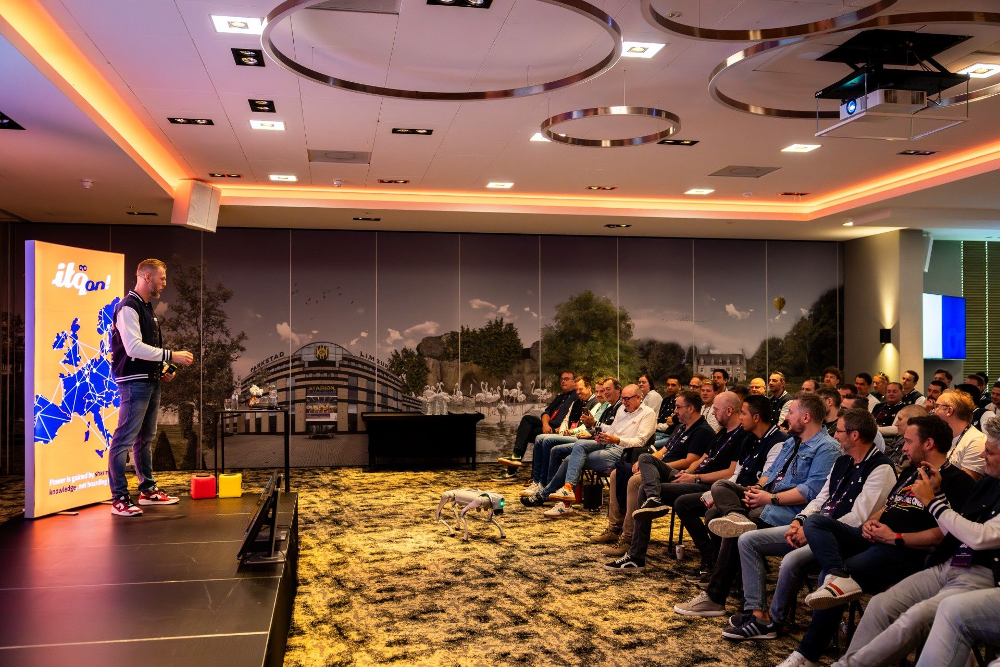
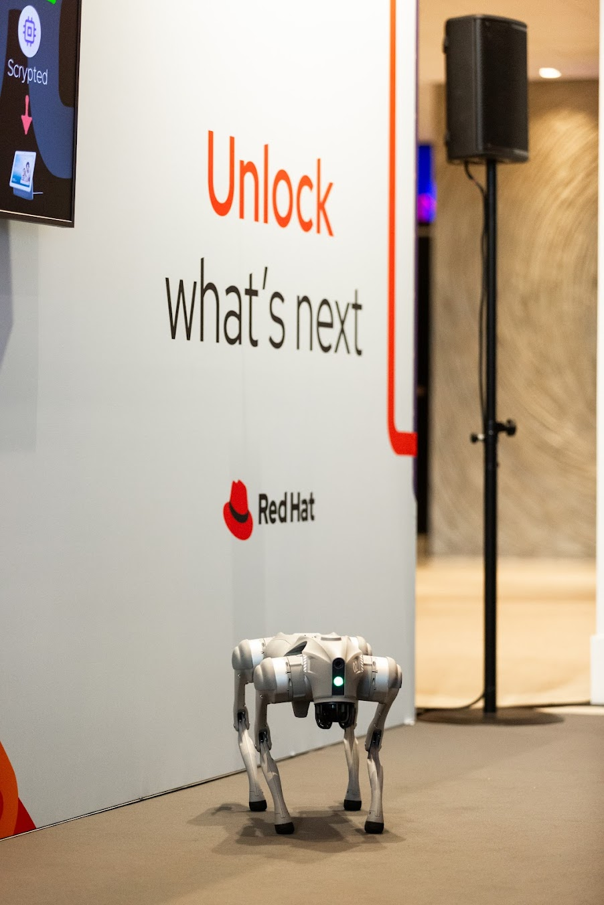
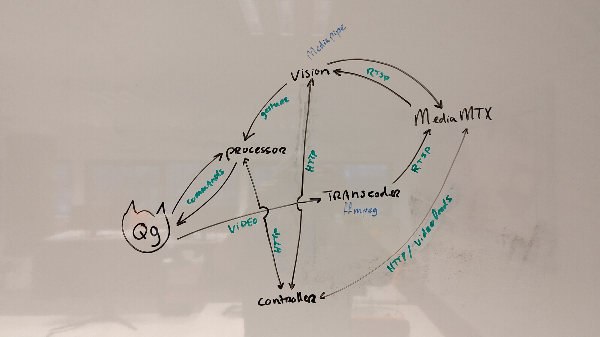
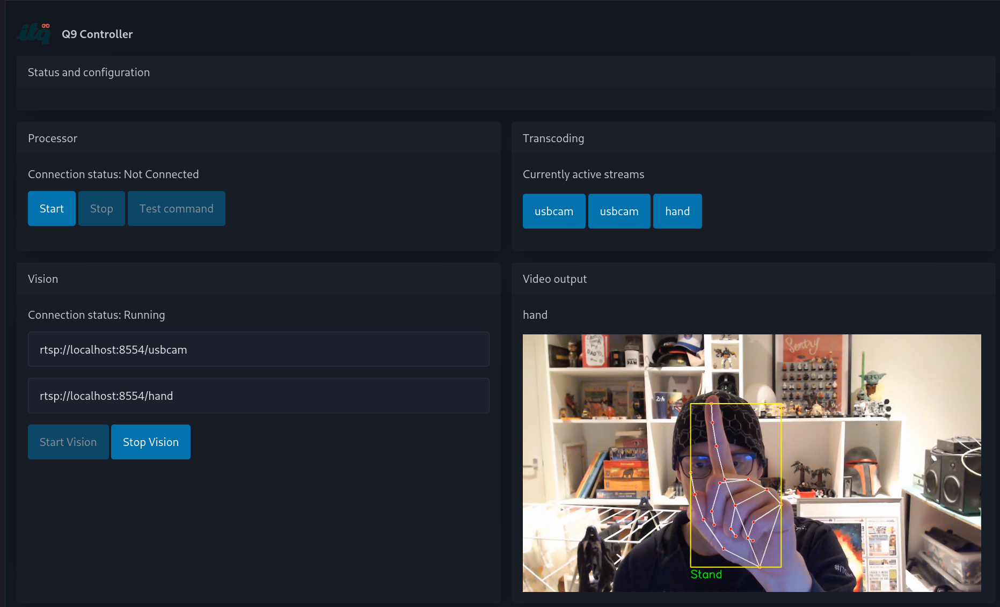

Project Q9
Hey it's a new year! Welcome to 2026!
Here's something I've been meaning to write about for a while and only now finally sat down for and actually do. Project Q9. One day at work I was pinged by Johan about a thing he'd been working on and if I was interested in helping out. It was then a little bit of a secret but it was soon revealed to me that Johan got a Unitree Go 2 quadruped robot dog to play around with for marketing and R&D type work for ITQs AI proposition. I was prette stoked about the whole plan.
As with all of these "he can you help me out" things it quickly went to "oh and we'd like to get something up and running in about 3 weeks".
 Q9 shown to the whole company at our company retreat ITQon in 2025.
So an event was coming up soon and we needed to have a demo. MANY ideas came up but it needed to be simple enough to have it ready in time. The plan that eventually made the cut was to have it do tricks based on hand gestures. The robot has built in party tricks that we could trigger based on camera input. Johan already had something roughed out and we got that refined just enough to work reliably most of the time.
We showed it off at Red Hat Summit NL for the first time and the booth was packed pretty much the whole day. Turns out, a robot dog attracts a crowd. He's even in quite a few of the official event pictures!
 Q9 as part of the talk Johan did at the event.
Tech talk
A robotic dog is without a doubt a real people magnet but we wanted to go beyond just using the remote control and mobile app. We wanted to show of some of our on-prem AI/ML stuff with this!
The diagrams and designs below are from the latest iteration of all the components we made to get our demo working. I do plan to put it all out in public at some point but for now it lives behind closed doors at ITQ.
The idea we wanted to bring to live is easy to explain. Show the dog a gesture (as you might with an actual dog), and the dog responds. It's easy to put in a single sentence but it took quite some work to get the full feedback loop rolling.
First problem was getting any sort of connection to the machine and while there are official docs and robotics frameworks out there, we wanted a more pragmatic approach that got results quickly. As with many things in software, speaking to a Unitree Go 2 had already been solved.
Big shout-out to Github user Legion1581, you saved me a huge amount of work by providing a connector that supported just the things we needed. Following the samples got us in a place where we could pull video from the dog and send back commands to make it do things. Awesome!
With the basic connectivity out of the way, hand gestures were the next thing on the list. Same thing, already solved. Thanks Google, for the Mediapipe solution. Supports pre-made detections and allows for custom gestures using landmarks.
The final piece was orchestrating something together that would give us the full feedbackloop I described above. Some more pieces were added like good ol' ffmpeg for video processing, MediaMTX for its RTSP capability and a pile of Python code to actually build the whole thing up.
Here's the final archtecture we landed on:

Processor, Vision, Transcoder and Controller are the components we built ourselves. They mostly try to automatically restore themselves when loss of connection happens. The whole thing is very statefull due to the live processing of video and responding to gestures. A connection between the dog and the processor is maintained constantly when started by the controller application. Gesture recognition starts on demand when initiated by the controller application. MediaMTX keeps all the active videostreams available through its API.
The whole thing can run on a somewhat well-specced laptop (I'm using a Framework 13 with an Intel 1280P) and you can get away without a GPU for the small scale of this setup. Once we start piling on more capabilities, a GPU will probably become a requirement for accelerating the AI/ML bits.
 A screenshot of the controller dashboard.
Final thoughts
This is an insanely cool project for me to work on (even if it's mostly in my own time). There's a bit of everything in it and there's so much more that can be some with a robotic dog. From a marketing perspective it's been quite succesfull, we've taken him to various meetings to show off what's possible with (relatively limited) hardware resources.
I for sure want to teach create more tricks with Q9 and once I do I'll probably do another write-up of what's new. For now I just wanted to describe the first demo we made (quite some time ago).
Anyway, lets make 2026 another fun one with much more hackery such as this. See you in the next one.
The full demo for the basic "Hello" gesture.